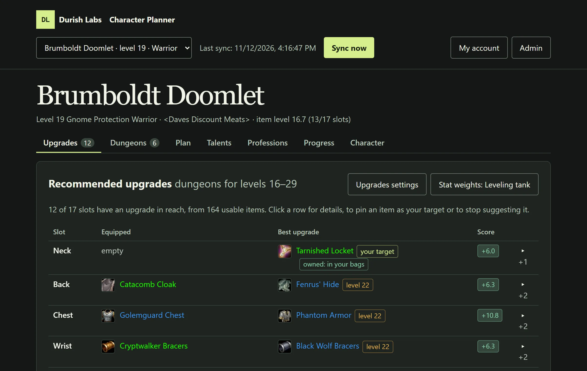

Software byDurish Labs.
Plan your next gear upgrades with Character Planner, and explore the other tools I’m building for World of Warcraft: Forever.
Explore projects
Projects
Self-hosted web app
Character Planner
Find your next gear upgrades, see which dungeons are worth running, and plan your talents as you level. Sync a character through Battle.net to track progress, or try recommendations by class and level in guest mode.

Windows desktop app
Dave’s Discount Meats AddOn Manager
Browse, install, and update WoW: Forever add-ons from public GitHub releases in one place.
In-game add-on
DDM Action Bar Manager
Find outdated spell ranks on your action bars and upgrade them in place. Keep any ranks you use intentionally.
View Action Bar Manager source
In-game add-on
Character Planner Export
Capture character, inventory, and quest data for Character Planner to import.
View Character Planner Export source
Developer tool
Forever API Explorer
Capture snapshots of the WoW: Forever Lua environment for inspection and comparison.
View API Explorer source
Developer reference
Forever API Atlas
Browse Lua symbols and captured API observations from WoW: Forever client snapshots.